MFP編程語言提供了一系列繪圖函數。但是，由於很多時候定義圖形的復雜性，這些繪圖函數的參數會非常多，每個參數往往還很長。這給用戶的輸入，特別是安卓平臺下用戶的輸入，帶來了巨大的麻煩。
在安卓平臺上，用戶可以在可編程科學計算器中的智慧計算器中繪圖，但是，智慧計算器只能對獨立的數學表達式繪圖，如果用戶需要在指定數值範圍繪制一些復雜的圖形，則需要使用可編程科學計算器中獨立的繪制圖形工具。
繪制圖形工具支持三種繪圖方式：繪制二維圖形，繪制極坐標圖形和繪制三維圖形，他們的繪圖模式實際上是類似的，以繪制二維圖形為例。首先用戶需要對圖形本身進行設定，包括圖像的名字（也就是圖形文件名），標題，x、y坐標軸的名稱，和是否顯示網格，然後用戶點擊添加曲線按鈕，可以在圖像中添加一條曲線（圖象最多顯示8條曲線）。
定義一條曲線是使用此工具的關鍵，曲線的標題，顏色，曲線上每個采樣點的形狀，以及是否顯示采樣點間的連接線都易於理解，關鍵什麽是t，t的定義範圍以及X(t)和Y(t)的定義。
我們知道，任何一個常規坐標上的不分叉二維曲線，都可以看作是一個點隨時間運動的軌跡，而這個軌跡在x軸位置上的投影，就是x坐標對於t的函數，也就是X(t)，同理，而這個軌跡在y軸位置上的投影，就是Y(t)。
為什麽用這樣的方式來定義一條曲線呢？原因在於，有時候一條曲線在同一個x的坐標對應多個y值，或者在同一個y的坐標對應於多個x的值。比如，一個圓形。用智慧計算器中繪圖功能，這樣的曲線有時無法用單個的表達式描述，而在這裏，則可以用t分別描述x和y。比如，圓形的半徑為2.5，圓心位置為(1.3,-1.7)，那麽，設定X(t)為2.5*cos(t)-1.3，設定Y(t)為2.5*sin(t)+1.7，讓t從0到2*pi變化，則這個圓可以精確地繪制出來。
用上述辦法，可以繪制出各種更為復雜的圖形。但是也可以用它繪制出常規的簡單圖形，辦法就是將X(t)設置為t（也就是用t來代替x），Y(t)設置為一個關於t的表達式，比如為了繪制最普通的拋物線，可以將Y(t)設置為t**2（也就是t平方），然後任選t的變化範圍，比如讓t從-5到5變化（也可以取其他變化範圍），就繪制出了拋物線y等於x平方x從-5到5的圖像。
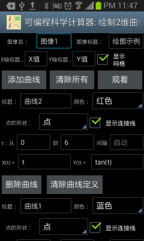
圖1： 用獨立的繪制圖形工具繪制二維圖形。
以下是用二維圖形工具繪制圖形的一些其它例子。比如，想要繪制從(3, 5)到(3,15)的線段，可以設定t從5到15，步長設為自動，X(t)設為3，Y(t)設為t，即可。
也可以用此工具繪制包含奇異點的圖形，比如想繪制y=tan(x)，可以設定t的範圍從-2*pi到2*pi，間隔設置為自動（空出不填寫就是自動），X(t)設置為t，Y(t)設置為tan(t)，則繪制出的圖形如下左。
但是如果 t的間隔設置不是自動（也就是用戶填入指定的間隔，比如0.1），可編程科學計算器將不會自動偵測奇異點，繪制出來的圖形如下圖右。
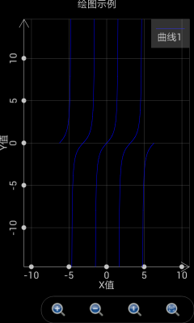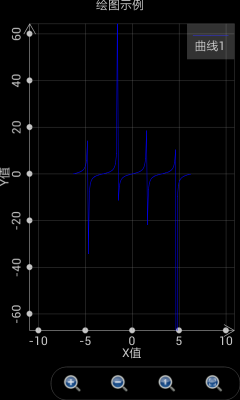
圖2： T的間隔設置為自動時，軟件能夠自動偵測奇異點。
繪制極坐標圖形和繪制二維圖形比較類似，但要註意這時就不再是設置X(t)和Y(t)而是設置r(t)和θ(t)。這裏r是軌跡點到極坐標的距離，θ是軌跡點的幅角。
以下是繪制極坐標圖形的一些例子。當t從0到2*pi，間隔為自動，r(t)為cos(t)，θ(t)為t時，繪制出來的是一個圓形。參見下圖的綠色曲線。
當t從-2*pi到2*pi，間隔為自動，r(t)為2*sin(4*t)，θ(t)為t時，繪制出來的是一個花瓣形。參見下圖的藍色曲線。
當t從-1.5*pi到1.5*pi，間隔為自動，r(t)為t，θ(t)為t時，繪制出來的是一個心形。參見下圖的紫紅色曲線。
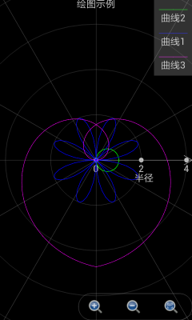
圖3： 極坐標繪圖工具繪制出各種圖形。
繪制三維圖形則略為復雜，設置界面參見下圖。圖像整體的設置和曲線的標題都易於理解。僅繪制網格復選框指的是僅僅繪制曲面上個網格而不加以填充。最大值和顏色值指的是當Z的值大於等於該最大值時，曲面正面的顏色和反面的顏色。最小值和顏色指的是當Z的值小於等於該最小值時，曲面正面的顏色和反面的顏色。位於最大值和最小值之間的部分，其顏色處於最大值顏色和最小值顏色之間的過渡。
和二維圖形不同，這裏不存在t，而是存在u和v，變量X，Y和Z都是u和v的函數。之所以設置兩個而不是一個內部變量是因為大部分情況下我們需要畫出的是曲面而不僅僅是一條曲線，u和v可以理解為軌跡點在曲面經度和緯度上的變化。
由於存在兩個內部變量，這時X，Y和Z均為基於內部變量u和v的表達式。通過設定X(u,v)，Y(u,v)和Z(u,v)，我們可以繪制出各種有趣的曲面。我們依然可以繪制出三維曲線，辦法是將X，Y和Z設置為僅僅基於u的表達式，和v的變化無關。
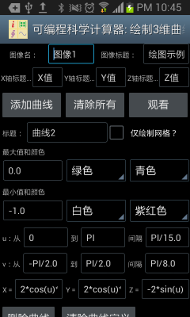
圖4： 用獨立的繪圖工具繪制出三維圖形。
以下是繪制三維圖像的例子。如果想繪制一個在x等於10 的平面，可以設定u從0到10，間隔為自動，v從0到10，間隔為自動，x設置為10，y設置為v，z設置為u，繪制出來的圖形如下圖：
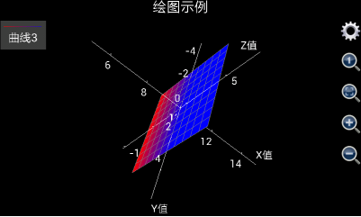
圖5： 用獨立的三維繪圖工具繪制出x等於10的平面。
如果想繪制出從三維空間中一個點到另外一個點的線段，比如從(x,y,z)=(1,5,6)到(x,y,z)=(10,3,9)，可以將u設置為從1到10，間隔為自動，因為x，y和z將和v無關，v的值可以任意設置。但要註意，由於圖像中所有需要計算的點的數目等於u的變化步數乘以v的變化步數，如果想要計算盡可能地快，需要計算的點的數目必需盡可能地少，由於u的變化間隔已經設置為自動，這樣一來，用戶需要使v的變化步數盡可能的少，所以，可以設置v從0到1變化間隔為1（也就是v的變化步數為1步）。然後將x設為u，y設為(u-1)/(10-1)*(3-5)+5以保證x和y線性相關，z設為(u-1)/(10-1)*(9-6)+6以保證x和z線性相關，還要註意，為了看清線段的顏色，必須選擇“僅繪制網格”復選框，否則繪制出的線段將是和坐標軸接近的灰色。繪制出來的圖形如下圖：
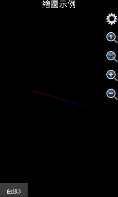
圖6： 用獨立的三維繪圖工具繪制出線段。
需要註意的是，在1.6.7版之前，可編程科學計算器繪制三維圖像時是自動顯示坐標軸的，如果用戶覺得坐標軸在圖形中顯得特別礙眼，可以點擊齒輪按鈕，選中“不顯示軸和標題”復選框，把坐標軸和標題隱藏起來。但是，從1.6.7版開始，可編程科學計算器繪制三維圖像時是自動隱藏坐標軸的，如果用戶想顯示坐標軸，可以點擊齒輪按鈕，不選中“不顯示軸”復選框，然後點擊確定，則坐標軸將會被顯示出來。使用類似的辦法，用戶還可以顯示或者隱藏標題。
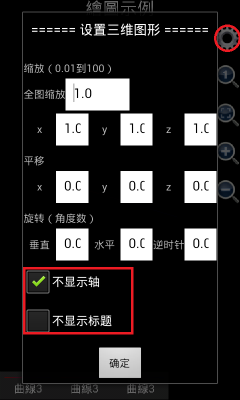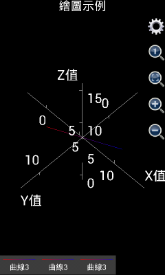
圖7： 三維圖形顯示或者隱藏坐標軸和標題。
如果是想繪制出更復雜的圖形，比如球形，可以想象u是球形的經度，而v是球形的緯度。那麽應該x設置為3*cos(v)*cos(u)，這裏3是球形的半徑，y設置為3* cos(v)*sin(u)，z設置為3*sin(v)，u的取值為0到2*pi，間隔自動，v的取值為-pi/2到pi/2，間隔自動，繪制出來的圖形如下圖左（由1.6.6.51版可編程科學計算器繪制出）。
如果用戶使用的是1.6.6或者以前版本的可編程科學計算器，就會發現，似乎繪制出的不是一個球，而是一個橢球體。這是因為，x，y和z軸的坐標單位長度不一致。用戶可以點擊那個放大鏡中有一個小1的按鈕，將x，y和z軸的坐標單位長度設為1：1：1，得到一個標準的球體。參見下圖右。如果用戶使用的是1.6.7版或者更高版本的可編程科學計算器，繪制三維圖形的時候，x、y和z的比例已經被自動調整為1：1：1，所以，用1.6.7或者更高版本的可編程科學計算器繪制上述圖像，將會直接得到下圖右的效果。
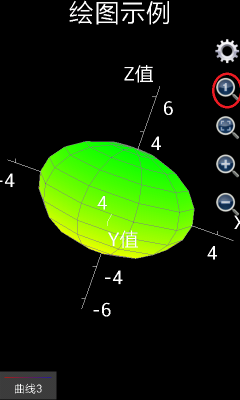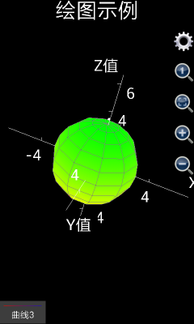
圖8： 用三維圖形工具繪制出球形。
如果用戶想繪制出一個類似地球的形狀，南北極是白色，中間是綠色，則要繪制出兩個半球，第一個半球，也就是第一條曲面，標題設置為“北半球”，不選擇“僅繪制網格”復選框，最大值和顏色選擇為自動（也就是不填任何內容），白色，白色（表示北極），最小值和顏色選擇為最大值和顏色選擇為自動，綠色，綠色（表示位於赤道的綠色森林）。x設置為3*cos(v)*cos(u)，這裏3是球形的半徑，y設置為3* cos(v)*sin(u)，z設置為3*sin(v)，u的取值為0到2*pi，間隔自動，v的取值為0到pi/2，間隔自動。
第二個半球，也就是第二條曲面，標題設置為“南半球”，不選擇“僅繪制網格”復選框，最小值和顏色選擇為自動，白色，白色（表示南極），最大值和顏色選擇為最大值和顏色選擇為自動，綠色，綠色（表示位於赤道的綠色森林）。x設置為3*cos(v)*cos(u)，y設置為3* cos(v)*sin(u)，z設置為3*sin(v)，u的取值為0到2*pi，間隔自動，v的取值為-pi/2到0，間隔自動。
最後繪制出來的圖形如下：
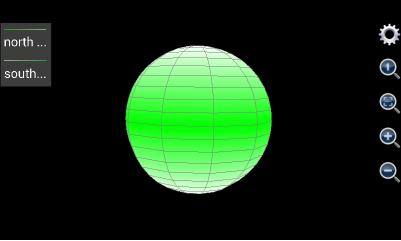
圖9： 用三維圖形工具繪制出類似地球形狀。
如果是想繪制圓柱體，則和繪制球體的辦法略有不同。球體用一個表面即可繪制出來，而圓柱體有三個表面——上表面，下表面和側表面。不妨假設待繪制的圓柱體半徑為5，圓柱體下表面的高度為0，上表面的高度為20，則對於柱體的下表面（是一個實心圓），設定u為幅角，變化範圍從0到2步長為0.05（表示從0到2*pi變化，每一步為0.05*pi），v為半徑，變化範圍從0到5步長為5，x應該設置為v*cos(u*pi)，y應該設置為v*sin(u*pi)，z是高度，等於0，最大值和顏色分別為自動，紅色，紅色，最小值和顏色也是自動，紅色，紅色（上表面的z方向厚度為0，所以最大值顏色和最小值顏色應該保持一致）。
對於柱體的上表面（也是一個實心圓），設定u為幅角，變化範圍從0到2步長為0.05（表示從0到2*pi變化，每一步為0.05*pi），v為半徑，變化範圍從0到5步長為5，x應該設置為v*cos(u*pi)，y應該設置為v*sin(u*pi)，z是高度，等於20，最大值和顏色分別為自動，藍色，藍色，最小值和顏色也是自動，藍色，藍色（下表面的z方向厚度為0，所以最大值顏色和最小值顏色應該保持一致）。
對於柱體側表面，u應該設置為柱體橫截面的幅角，變化範圍從0到2步長為0.05（表示從0到2*pi變化，每一步為0.05*pi）,v為柱體表面每一點的垂直高度，所以v的變化範圍從0到20步長為20，由於柱體的側表面上每一點的半徑均為5，x的應該設置為為5*cos(u*pi)，y應該設置為5*sin(u*pi)，z應該設置為v。為了和上下表面的顏色匹配，側表面的最大值和顏色分別為自動，藍色，藍色（和上表面保持一致），最小值和顏色分別為自動，紅色，紅色（和下表面保持一致），則最後繪制出的圖形如下圖：
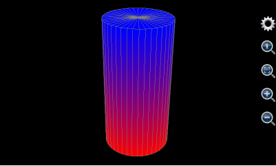
圖10： 用三維圖形工具繪制出圓柱體。
用三維繪圖工具也可以繪制出圓錐體。和圓柱體有所不同的是，圓錐體只有兩個表面——下表面和側表面。下表面繪制方法和圓柱體完全一樣，對於側表面，其上每一點的半徑隨著高度的增加而減小，所以，其半徑不再是一個常數，而是一個和高度線形相關的變量。
不妨假設待繪制的圓錐體的下表面的半徑為5，下表面高度為0，圓錐體的高度為20，下表面由於和上述圓柱體的下表面完全一樣，繪制方法參見上面圓柱體下表面的繪制方法。對於側表面，u應該設置為錐體橫截面的幅角，變化範圍從0到2步長為0.05（表示從0到2*pi變化，每一步為0.05*pi）,v為錐體表面每一點的垂直高度，所以v的變化範圍從0到20步長為20，由於錐體的側表面上每一點的半徑為和高度反向線形相關，所以半徑表達式應該寫為5*(20-v)/20，x的應該設置為為5*(20-v)/20*cos(u*pi)，y應該設置為5*(20-v)/20*sin(u*pi)，z應該設置為v。側表面的最大值和顏色分別為自動，藍色，藍色，為了和下表面的顏色匹配，最小值和顏色分別為自動，紅色，紅色，則最後繪制出的圖形如下圖：
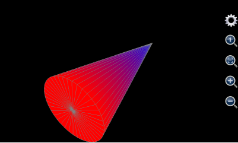
圖11： 用三維圖形工具繪制出圓錐體。
用這個三維繪圖工具還可以生成其他一些有趣的形狀。比如u設置為0到2*pi，v設置為0到10，x設置為v*cos(u)，y設置為v*sin(u)，z設置為6*cos(v)*exp(-v/10)，我們得到如下形狀：
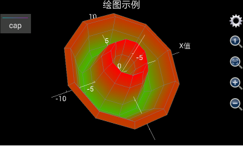
圖12： 用三維圖形工具繪制出類似花朵的形狀。
再比如，設置v從0到10 步長0.1，設置x為v*cos(v)，y為v*sin(v)，z為v，u設置為其他任何值（如上所述，為了加快計算速度，最好設置v從0到1步長為1），並選中“僅繪制網格”復選框，我們得到如下螺旋曲線：
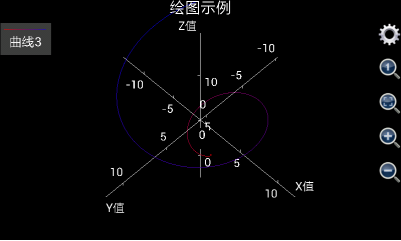
圖13： 用三維圖形工具繪制出螺旋線。
最後，本節列出一個使用三維圖形繪圖工具繪制出復雜圖形的例子。眾所周知，中國最大的城市上海的地標建築為東方明珠電視塔，其照片如下：
圖14： 上海地標東方明珠電視塔。
那麽，有沒有可能利用三維繪圖工具在手機中畫出東方明珠電視塔呢？答案是肯定的。
為了繪制出東方明珠電視塔，首先需要分析出東方明珠電視塔由哪些幾何圖形構成（從底部到頂部）：
最下端是電視塔底部三根傾斜的支撐柱。對於標題和顏色，設置曲面標題為空，不選擇“僅繪制網格”，設置最小值顏色為紅色（red），最大值顏色為黃色（yellow），最小值和最大值不設置（也就是設置為軟件缺省值）。假設柱體的半徑為3，傾斜度為45度，高度為20，則三根柱體的底部中心坐標在水平面上構成了一個正三角形，其坐標分別為(-20*sqrt(3)/2,-10,0)，(0,20,0)，(20*sqrt(3)/2,-10,0)，設置u為幅角，v為半徑，u從0到8（表示從0到8*pi），步長為0.25（表示1/4*pi），v從0到20，步長為20，則x的表達式為iff(u<=2,3*cos(u*pi)-(20-v)*sqrt(3)/2,and(u>=3,u<=5), 3*cos(u*pi), u>=6, 3*cos(u*pi)+(20-v)*sqrt(3)/2, Nan)，y的表達式為iff(u<=2,3*sin(u*pi)+(20-v)/2,and(u>=3,u<=5), 3*sin(u*pi)-(20-v)*sqrt(3)/2, u>=6, 3*sin(u*pi)+(20-v)/2, Nan)，由於海拔為隨v變化，所以z的表達式就是v。
這裏需要註意幾點，首先，三根傾斜的支撐柱實際上包括3個曲面，但是這裏用一組表達式繪制出來。為什麽這樣做而不是用一組表達式繪制一個曲面呢？原因在於，上海東方明珠電視塔所需要繪制的曲面個數超過8個，而使用繪制圖形工具最多只能使用8組表達式，所以，必須使用一組表達式繪制出多個曲面。
使用一組表達式繪制多個曲面，其竅門在於使用了iff（也就是如果）函數。這裏，u的值是從0到8（也就是幅角變化範圍從0到8*pi），但是一個柱體橫截面的幅角變化範圍是從0到2*pi，這樣，我們通過調用iff語句，在u從0到2（也就是幅角從0到2*pi）變化時繪制第一個柱體，在u從3到5（也就是幅角從3*pi到5*pi）變化時繪制第二個柱體，在u從6到8（也就是幅角從6*pi到8*pi）變化時第三個柱體，u在不同的範圍，通過iff函數所提供的x和y的表達式不同。
但是，為什麽不設置u的值從0到6變化？換句話說，為什麽需要引入u從2到3和從5到6時x和y的值為Nan？這是因為，雖然可以同時繪制3個柱體，但是必須保證這三個柱體並不相連，引入u從2到3和從5到6時x和y的值為Nan，就是起到斷開這三個曲面的連接的作用，畢竟，Nan是無法被繪制出來的。
至於x和y的表達式中的(20-v)*sqrt(3)/2和(20-v)/2部分，則是用來實現柱體的傾斜效果，也就是說，隨著v的增大，x和y的坐標出現漂移。
繪制了三根支撐柱體之後，註意到三根支撐柱體之間還有一根立柱起到上下通路的作用。繪制直立柱體很簡單，對於標題和顏色，設置曲面標題為空，不選擇“僅繪制網格”，設置最小值顏色為綠色（green），最大值顏色為黃色（yellow），最小值和最大值不設置（也就是設置為軟件缺省值）。對於曲面本身，可以設置u從-1到1，步長為0.25，v從0到20，步長為20，柱體半徑為2，則x的表達式為cos(u*pi)*2，y的表達式為sin(u*pi)*2，由於海拔為v，所以z的表達式為v；
然後就是一個很大的球體，對於標題和顏色，設置曲面標題為空，不選擇“僅繪制網格”，設置最小值顏色為紅色（red），最大值顏色為青色（cyan），最小值和最大值不設置（也就是設置為軟件缺省值）。對於曲面本身，假設其半徑為10，球心位於(0,0,20)，u從-pi到pi步長為pi/10，v從-pi/2到pi/2步長為pi/10，x的表達式為10*cos(u)*cos(v)，y的表達式為10*sin(u)*cos(v)，z的表達式為10*sin(v)+20；
球體之上是三根垂直的立柱，對於標題和顏色，設置曲面標題為空，不選擇“僅繪制網格”，設置最小值顏色為綠色（green），最大值顏色為蘭色（blue），最小值和最大值不設置（也就是設置為軟件缺省值）。對於曲面本身，假設立柱的半徑為1.5，三個柱心的x和y的坐標分別為(-2,2/sqrt(3))，(0,4/sqrt(3))和(2,2/sqrt(3))，和繪制三根斜柱一樣，設置u為幅角，v為半徑，u從0到8（表示從0到8*pi），步長為0.25（表示1/4*pi），v從20到70，步長為50，則x的表達式為iff(u<=2,1.5*cos(u*pi)-2,and(u>=3,u<=5), 1.5*cos(u*pi), u>=6, 1.5*cos(u*pi)+2, Nan)，y的表達式為iff(u<=2,1.5*sin(u*pi)+2/sqrt(3),and(u>=3,u<=5), 1.5*sin(u*pi)- 4/sqrt(3), u>=6, 1.5*sin(u*pi)+2/sqrt(3), Nan)，z的表達式為v。
然後繪制立柱上部的較小的球體，對於標題和顏色，設置曲面標題為空，不選擇“僅繪制網格”，設置最小值顏色為紫紅色（magenta），最大值顏色為白色（white），最小值和最大值不設置（也就是設置為軟件缺省值）。對於曲面本身，設置球心為(0,0,70)，半徑為6，u從-pi到pi步長為pi/10，v從-pi/2到pi/2步長為pi/10，x的表達式為6*cos(u)*cos(v)，y的表達式為6*sin(u)*cos(v)，z的表達式為6*sin(v)+70；
小球上面還有一根立柱，對於標題和顏色，設置曲面標題為空，不選擇“僅繪制網格”，設置最小值顏色為黃色（yellow），最大值顏色為綠色（green），最小值和最大值不設置（也就是設置為軟件缺省值）。對於曲面本身，假設高度為15，柱心位於(0,0)，半徑為1.5，設置u為幅角，v為半徑，u從0到2（表示從0到2*pi），步長為0.25（表示1/4*pi），v從70到85，步長為15，則x的表達式為cos(u*pi)*1.5，y的表達式為sin(u*pi)*1.5，z的表達式為v；
柱上面還有一個更小的球，對於標題和顏色，設置曲面標題為空，不選擇“僅繪制網格”，設置最小值顏色為紅色（red），最大值顏色為青色（cyan），最小值和最大值不設置（也就是設置為軟件缺省值）。對於曲面本身，設置球心位於(0,0,85)，半徑為2，設置u從-pi到pi步長為pi/10，v從-pi/2到pi/2步長為pi/10，x的表達式為2*cos(u)*cos(v)，y的表達式為2*sin(u)*cos(v)，z的表達式為2*sin(v)+85；
最後是圓椎形的天線，對於標題和顏色，設置曲面標題為空，不選擇“僅繪制網格”，設置最小值顏色為紅色（red），最大值顏色為淺灰色（ltgray），最小值和最大值不設置（也就是設置為軟件缺省值）。對於曲面本身，設置椎底半徑為0.5，椎高度為30，椎底中心坐標為(0,0,85)，設置u從-pi到pi步長為pi/5，v從85到115步長為10，設置椎頂部最小半徑為0.2倍的錐體底部最大半徑，則x的表達式為0.5*max(0.2,(115-v)/30)*cos(u*pi)，y的表達式為0.5*max(0.2,(115-v)/30)*sin(u*pi)，z的表達式為v。
以上設置相當繁復，用戶在手機上輸入比較困難。考慮到這一點，在可編程科學計算器1.6.7及其以上版本中，用戶進入“繪制三維圖像”工具後，點擊安卓系統的菜單按鈕，選擇“填充示例”菜單，所有上述輸入將自動被填入，用戶只需再點擊觀看按鈕就可以開始繪制圖形。
由於東方明珠電視塔是一個很復雜的圖形，如果手機性能不好，繪制這個圖形可能需要2-3分鐘（手機性能好可能會很快），所以需要耐心等待，如果用戶使用的是可編程科學計算器1.6.6版及其以下版本，最後繪制出來的圖形參見下圖左邊部分。
顯然，上圖左邊部分的圖形長寬高不成比例，所以，如果使用的是可編程科學計算器1.6.6版及其以下版本，用戶需要點擊紅色圓圈中的放大鏡裏面有一個小1的按鈕，將長寬高調整為1：1：1，然後，用戶需要點擊綠色圓圈中的齒輪按鈕，選擇隱藏坐標軸和標題，最後調整過的圖形參見下圖右邊部分。
如果用戶使用的是可編程科學計算器1.6.7版及其以上版本，則不需要做上述調整，繪制出的圖形的長寬高單位比例自動設置為1：1：1，並且坐標軸自動隱藏（標題會自動顯示），圖像繪制出來就達到下圖右邊部分的效果。對比東方明珠的照片，可以看到繪制出來的圖形非常相似和完美。
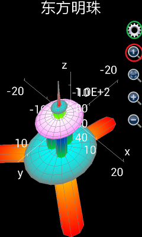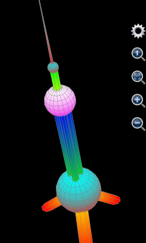
圖15： 用繪制圖形工具繪制上海東方明珠電視塔。
當然，無論如何，在手機上輸入上述8組復雜的表達式是一件非常不容易的事情，這個時候，調用MFP的plot3d或者plot_3d_surfaces函數直接編程的威力就顯現出來。如果用戶會使用編程功能，可以將上述輸入在一個自定義函數中用一個MFP調用語句實現，將該自定義函數保存在一個代碼的文本文件中，任何時候，用戶只需要在命令提示符中輸入函數名並執行就可以繪制出精美的東方明珠電視塔圖形。
基於JAVA的可編程科學計算器也有類似的繪制圖形工具。在JAVA的可編程科學計算器目錄中雙擊JMFPLang.jar打開可編程科學計算器界面，在“工具”菜單中可以看到三個選項，分別是“繪制二維圖形”，“繪制極坐標圖形”和“繪制三維圖形”。它們和安卓上的可編程科學計算器中的對應的繪圖工具的功能完全一致。比如，繪制三維圖形的界面如下：
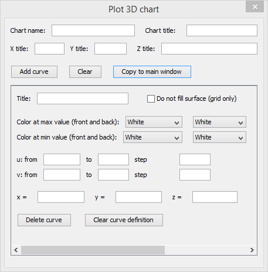
圖16： 基於JAVA的可編程科學計算器繪制三維圖形的工具。